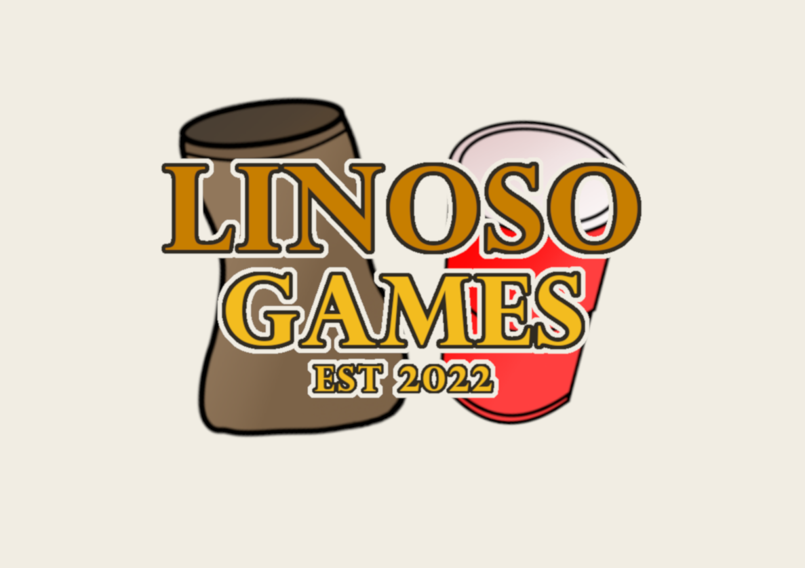

Bild von Freepik
DIE LINOSO GAMES

DIE ERSTEN SPIELE
Die Linoso Games, bestehend aus einer Reihe von Kindergeburtstagsspielen, wurden erstmals im Oktober 2022 ausgetragen. Die Spiele sind für Kinder und Jugendliche gedacht und bieten eine unterhaltsame Möglichkeit, Geburtstage und andere Feierlichkeiten zu feiern.
DIE GEWINNER DER ERSTEN AUSGABE
Die erste Ausgabe der Linoso Games wurde von Sean, Jana und Valerio gewonnen. Als Preis für das Gewinnerteam wurde eine Goldene Gieskanne als Wanderpokal verliehen.
DIE SPIELE
Bei den ersten Linoso Games wurden folgende Spiele gespielt: Löffeleier, Dart, Sackhüpfen, Boccia, Mario Kart, Looping Lui, Kartenspiele und Tischtennis. Die Auswahl der Spiele bietet für Kinder und Jugendliche eine Vielfalt an Möglichkeiten, ihre Fähigkeiten und Fertigkeiten zu verbessern, während sie sich gleichzeitig amüsieren.
DIE GRUNDIDEE
Linoso Games setzt sich zum Ziel, ein Geburtstagsfest zu entwickeln, welches sicher, unterhaltsam und pädagogisch wertvoll ist. Die Spiele bieten Kindern die Möglichkeit, ihre Fähigkeiten und Fertigkeiten zu verbessern, während sie sich gleichzeitig amüsieren sowie auch duellieren können.
TEILNAHME
Wenn Sie an den Linoso Games teilnehmen möchten, müssen wir Sie leider entäuschen. Dies ist aktuell nur auf Einladung möglich. Für die Zukunft ist eine Teilnahme jedoch nicht ausgeschlossen.
UNSER ZIEL
Die Linoso Games sollen jährlich stattfinden und das Organisations-Team, bestehend aus Linus, Sean und Marc, soll regelmäßig für Spielanpassungen und Neuerungen sorgen, um die Spannung hoch zu halten. Das grösste Ziel der Linoso Games ist es, irgendwann im Hallenstadion vor einem Live-Publikum ausgetragen zu werden und von Sponsoren unterstützt zu werden. Mit einer Live-Übertragung weltweit im Fernsehen zur Prime Time soll eine möglichst große Zuschauerzahl erreicht werden.